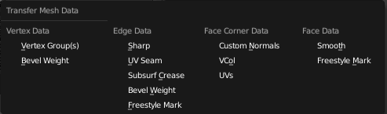

Data Transfer¶
The Data Transfer tool transfers several types of data from one mesh to another. Data types include vertex groups, UV layers, vertex colors, custom normals...
Transfer works by generating a mapping between source mesh’s items (vertices, edges, etc.) and destination ones, either on a one-to-one basis, or mapping several source items to a single destination one - interpolated mapping.
Data¶
Transfers layout of data layer(s) from active to selected meshes.
- Freeze Operator
- Prevent changes to settings to re-run the operator. This is useful if you are editing several settings at once with heavy geometry
- Data Type
Which data to transfer.
Data types.
- Create Data
- Add data layers on destination meshes if needed.
- Vertex Mapping
- Method used to map source vertices to destination ones. Because the options change depending on the Data Type options are explained in Vertex Mapping below.
Vertex Mapping¶
- Topology
- The simplest option, expects both meshes to have identical number of items, and match them by order (indices). Useful e.g. between meshes that were identical copies, and got deformed differently.
- One-To-One Mappings
Those always select only one source item for each destination one, often based on shortest distance.
- Vertices
- Nearest Vertex
- Uses source’s nearest vertex.
- Nearest Edge Vertex
- Uses source’s nearest vertex of source’s nearest edge.
- Nearest Face Vertex
- Uses source’s nearest vertex of source’s nearest face.
- Edges
- Nearest Vertices
- Uses source’s edge which vertices are nearest from destination edge’s vertices.
- Nearest Edge
- Uses source’s nearest edge (using edge’s midpoints).
- Nearest Face Edge
- Uses source’s nearest edge of source’s nearest face (using edge’s midpoints).
- Face Corners
A face corner is not a real item by itself, it’s some kind of split vertex attached to a specific face. Hence both vertex (location) and face (normal, ...) aspects are used to match them together.
- Nearest Corner and Best Matching Normal
- Uses source’s corner having the most similar split normal with destination one, from those sharing the nearest source’s vertex.
- Nearest Corner and Best Matching Face Normal
- Uses source’s corner having the most similar face normal with destination one, from those sharing the nearest source’s vertex.
- Nearest Corner of Nearest Face
- Uses source’s nearest corner of source’s nearest face.
- Faces
- Nearest Face
- Uses source’s nearest face.
- Best Normal-Matching:
- Uses source’s face which normal is most similar with destination one.
- Interpolated Mappings
Those use several source items for each destination one, interpolating their data during the transfer.
- Vertices
- Nearest Edge Interpolated
- Uses nearest point on nearest source’s edge, interpolates data from both source edge’s vertices.
- Nearest Face Interpolated
- Uses nearest point on nearest source’s face, interpolates data from all that source face’s vertices.
- Projected Face Interpolated
- Uses point of face on source hit by projection of destination vertex along its own normal, interpolates data from all that source face’s vertices.
- Edges
- Projected Edge Interpolated
- This is a sampling process. Several rays are cast from along the destination’s edge (interpolating both edge’s vertex normals), and if enough of them hit a source’s edge, all hit source edges’ data are interpolated into destination one.
- Face Corners
A face corner is not a real item by itself, it’s some kind of split vertex attached to a specific face. Hence both vertex (location) and face (normal, ...) aspects are used to match them together.
- Nearest Face Interpolated
- Uses nearest point of nearest source’s face, interpolates data from all that source face’s corners.
- Projected Face Interpolated
- Uses point of face on source hit by projection of destination corner along its own normal, interpolates data from all that source face’s corners.
- Faces
- Projected Face Interpolated
- This is a sampling process. Several rays are cast from the whole destination’s face (along its own normal), and if enough of them hit a source’s face, all hit source faces’ data are interpolated into destination one.
- Auto 变换
- Automatically computer the transformation to get the best possible match between source and destination meshes.
- Object 变换
- Evaluate source and destination meshes in global space.
- Only Neighbor 几何体
Source elements must be closer than given distance from destination one.
- Max Distance
- Maximum allowed distance between source and destination element (for non-topology mappings).
- Ray Radius
- Width of rays. Useful when raycasting against vertices or edges.
- Mix Mode
How to affect destination elements with source values.
- All
- Replaces everything in destination (note that Mix Factor is still used).
- Above Threshold
- Only replaces destination value if it’s above given threshold Mix Factor. How that threshold is interpreted depends on data type, note that for boolean values this option fakes a logical AND.
- Below Threshold
- Only replaces destination value if it’s below given threshold Mix Factor. How that threshold is interpreted depends on data type, note that for boolean values this option fakes a logical OR.
- Mix, Add, Subtract, Multiply
- Apply that operation, using mix factor to control how much of source or destination value to use. Only available for a few types (vertex groups, vertex colors).
- Mix Factor
- How much of the transfered data gets mixed into existing one (not supported by all data types).
Data Layout¶
Transfers layout of data layer(s) from active to selected meshes.
- Data Type
Which data to transfer.
Data types.
- Exact Match
- Also Delete some data layers from destination if necessary, so that it matches the source exactly.
- Source Layers Selection
Which layers ti transfer, in case of multi-layer types.
- Active Layer
- Only transfer the active data layer.
- All Layers
- Trandfer all data layers.
- Destination Layers Matching
How to match source and destination layers.
- By Name
- Match target data layers to effect by name.
- By Order
- Match target data layers to effect by order (indices).